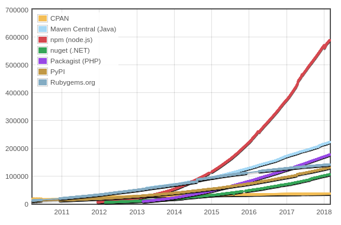
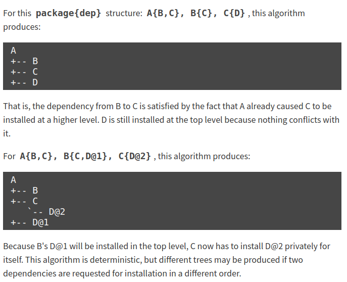

<!doctype html>
<html>
<head>
    <meta charset="utf-8">
    <meta name="viewport" content="width=device-width, initial-scale=1.0, maximum-scale=1.0, user-scalable=no">
    <title>pip - python package manager</title>
    <link rel="stylesheet" href="css/reveal.min.css">
    <link rel="stylesheet" href="css/black.min.css">
    <link rel="stylesheet" href="css/zenburn.css">
    <link rel="stylesheet" href="css/custom.css">
</head>

<body>
<div class="reveal">
    <div class="slides">
        <section data-markdown
            data-separator="^\n----\n$"
            data-separator-vertical="^\n---\n$">
            <script type="text/template">
            <!-- .slide: data-background="#242177" -->
            

            ## Cowlab Talks

            Package Managers: PIP by [@oscarmlage](https://twitter.com/oscarmlage), NPM by [@nosolosw](https://twitter.com/nosolosw), and Composer by [@dieg0v](https://twitter.com/dieg0v)

            ----

						## NPM

            Node Package Manager

            [https://npmjs.com](https://npmjs.com)

            ---

						## JS History 101 (1/6)

						[On JavaScript Modules](http://nosolosoftware.com/on-javascript-modules/)

						* 1995 - JavaScript is born without modules; we had [IIFEs](http://nosolosoftware.com/glossary/iife/), [Namespace pattern](http://nosolosoftware.com/glossary/namespace-pattern/), [Module pattern](http://nosolosoftware.com/glossary/module-pattern/)
						* 1996 - 1st server-side JS: Netscape Enterprise Server

            ---

						## JS History 101 (2/6)

						* 2009 - ServerJS (later renamed to CommonJS): [goal is create an ecosystem](http://www.blueskyonmars.com/2009/01/29/what-server-side-javascript-needs/) by developing a standard library, interfaces, modules, and a package registry for server-side JS
						* 2009 - Node.js
						* 2010 - npm & Node.js adopts CommonJS module proposal

            ---

						## JS History 101 (3/6)

						Born as the *Node* Package Manager

						* Inspired by CPAN and YINST ([ref](https://github.com/nodejs/node-v0.x-archive/issues/5132#issuecomment-15432598))
						* CommonJS module format

						```javascript
						// File input.js
						const { HELLO, WORLD } = require( './constants' );
						console.log( HELLO + ' ' + WORLD );

						// File constants.js
						module.exports = {
							HELLO: 'HELLO',
							WORLD: 'WORLD',
						};
						```

            ---

						## JS History 101 (4/6)

						* 2011 - Browserify: CommonJS for browsers
						* 2013 - Node.js *[is](https://github.com/nodejs/node-v0.x-archive/issues/5132#issuecomment-15432598)* server-side JavaScript

            ---

						## JS History 101 (5/6)

						Became the *JavaScript* Package Manager: [17B](https://docs.npmjs.com/getting-started/what-is-npm) downloads month , [600K](http://modulecounts.com/) packages in the registry.

						

            ---

						## JS History 101 (6/6)

						* 2015 - The JavaScript language gets a native module system!

            ----

						# Task <span class="green">#1</span>

						Install a real project using npm<!-- .element: class="green" -->

            ---

						## Pre-requisites

						Have node & npm installed ([docs](https://docs.npmjs.com/getting-started/installing-node)). Pro-tip: use nvm ([docs](https://github.com/creationix/nvm#installation))

						```console
						$ nvm install node # install the latest release

						$ nvm ls # list installed node versions

						$ nvm use lts # use the Long-Term-Support version
						$ nvm use 6.11.5 # use the v6.11.5
						```

            ---

						## Download & install

						```console
						$ git clone https://github.com/Automattic/eslines

						$ less package.json # let's review this

						$ npm install
						```

            ---

						## What happened?

						Refs: [npm-folders](https://docs.npmjs.com/files/folders), [npm-install](https://docs.npmjs.com/cli/install#algorithm)

						TLDR: downloads packages (TGZ format) from registry, and unpacks them in `node_modules` directory.

						```
						cd ./node_modules && ls
						ls .bin/
						```

            ---

						## More in detail

						* Download package.TGZ to cache (`npm config get cache`)
						* Unpack it in `npm prefix` within the `node_modules` dir
						* Simlink executable to `npm bin`
						* Do the same for each one of the pkg dependencies and install every dependency in the `node_modules` folder unless there is a conflict

            ---

						## What if there are two versions of the same lib?

						

            ---

						## Let's inspect `node_modules`

						```console
						$ cd ./node_modules && ls
						$ ls .bin/

						$ npm ls | less # the dependency tree explained, not the dir tree

						$ # task1: what happened to tape?

						$ # task 2: trace how many minimist packages we have downloaded
						$ # https://www.npmjs.com/package/minimist

						```

            ---

						## Let's review some examples

						[Package.json docs](https://docs.npmjs.com/files/package.json)

						Projects: [Atom](https://github.com/atom/atom/blob/master/package.json), [React](https://github.com/facebook/react/blob/master/package.json), [Bootstrap](https://github.com/twbs/bootstrap/blob/v4-dev/package.json), [and more](https://github.com/topics/javascript)

            ---

						## Recap

						* dependencies VS devDependencies
						* package: version (from registry), git, github, local path, URL
						* public, scoped & private (not private key!)
						* pinned version VS [semver](https://docs.npmjs.com/getting-started/semantic-versioning) range (docs)
						* [lock](https://docs.npmjs.com/files/package-locks) & [shrinkwrap](https://docs.npmjs.com/files/shrinkwrap.json) files
						* [scripts](https://docs.npmjs.com/cli/run-script): core VS user (docs)
						* main & bin fields
						* engines & browserlist

            ----

            # Task <span class="green">#2</span>

            Create a MVP: Minimum Viable Package!<!-- .element: class="green" -->

            ---

						## Prepare the package.json

						```console
						$ cd /tmp
						$ mkdir is-cow-alive
						$ cd is-cow-alive

						$ npm init # ask you questions and generates a package.json for you
            ```

            ---

						## Create something

						It might be even useful if you are inspired

						```console
						$ cd /tmp
						$ mkdir is-cow-alive
						$ cd is-cow-alive

						$ npm init # ask you questions and generates a package.json for you

						$ echo 'module.exports = false;' > index.js # entry point
            ```

            ---

						## And publish!

						```console
						$ cd /tmp
						$ mkdir is-cow-alive
						$ cd is-cow-alive

						$ npm init # ask you questions and generates a package.json for you

						$ echo 'module.exports = false;' > index.js # entry point

						$ npm who # I want to know under which profile I'm doing this
						$ npm publish
            ```

            ---

						## Let's use our package

						We have this brand new project:

						```console
						$ cd /tmp
						$ mkdir check-iscowalive
						$ cd check-iscowalive

						$ npm install iscowalive # We are using npm with no package.json!

						$ echo "console.log( require('iscowalive') );" > index.js
						$ node index.js
						```

            ---

						## Let's share it with our colleagues

						```console
						$ npm init

						$ git init
						$ echo 'node_modules' > .gitignore
						$ git add index.js package.json package-lock.json .gitignore
						$ git commit -m 'MVP'
						$ git remote add origin <your-remote-goes-here>
						$ git push -u origin master            ```

            ---

						## QUIZZ TIME!

						What would happen if:

						* `iscowalive` versions `1.1.0` and `2.0.0` are published
						* a colleague installs `check-iscowalive`

						What `iscowalive` version is our colleague to get?

						Note that the `check-iscowalive` package.json dependency was `iscowalive^1.0.0`.

            ---

						## QUIZZ TIME!

						**ANSWER:** package-lock.json to the rescue! `iscowalive@1.0.0` is installed and we have the same setup.

            ---

						## QUIZZ TIME!

						What would happen if:

						* the `iscowalive` author unpublishes the package
						* and other author takes that name to do malicious things

            ---

						## QUIZZ TIME!

						**ANSWER:** we are safe now. Read about the left-pad drama ([1](https://www.theregister.co.uk/2016/03/23/npm_left_pad_chaos/), [2](http://blog.npmjs.org/post/141905368000/changes-to-npms-unpublish-policy))

            ----

						<!-- .slide: data-background="#242177" -->
						## Final considerations

						* Use a node manager such as `nvm` or `n`
						* Pin & lock your dependencies
						* Be prepared for a rapid-changing environment

            ----

            <!-- .slide: data-background="#242177" -->
            

            # Thanks!

            </script>
        </section>

    </div>
</div>

<script src="js/head.min.js"></script>
<script src="js/reveal.min.js"></script>
<script>
    Reveal.initialize({
        history: true,

        dependencies: [
            { src: 'js/marked.js' },
            { src: 'js/markdown.min.js' },
            { src: 'js/highlight.min.js',
              async: true, callback: function() { hljs.initHighlightingOnLoad(); } }
        ],

        width: "60%",
        height: "100%",
        margin: 0,
        minScale: 1,
        maxScale: 1,
        controls: true,
            progress: true,
            center: true,
            transition: 'slide'
    });
</script>
</body>
</html>
